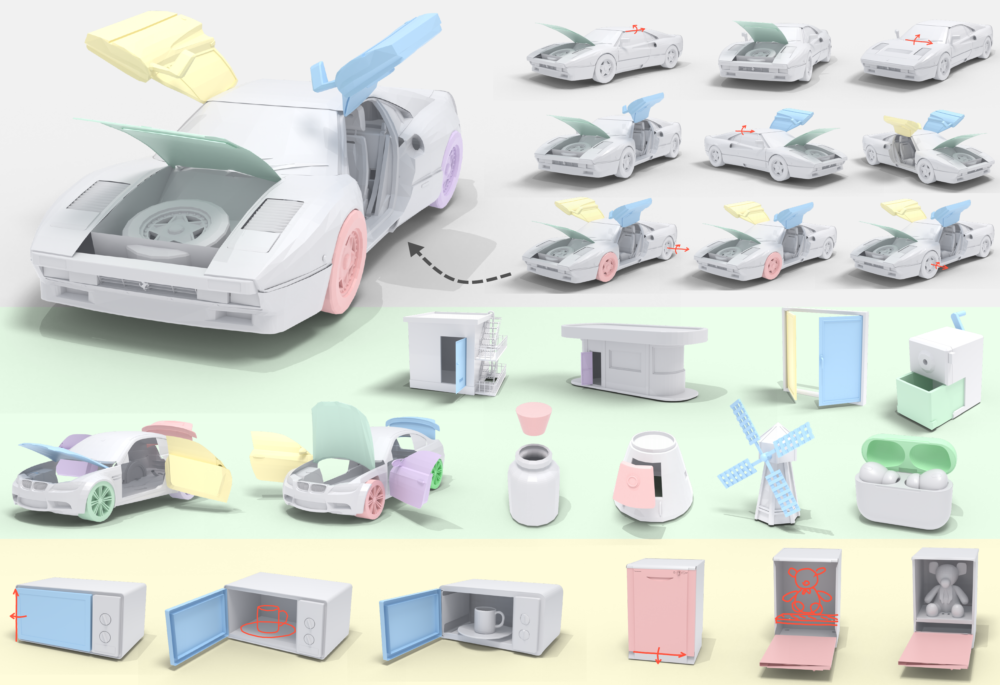
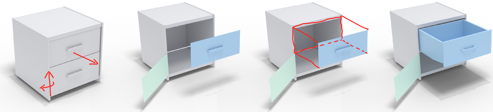
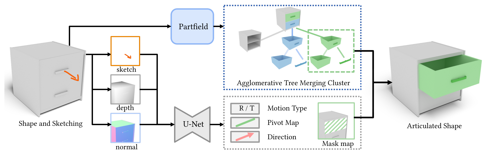
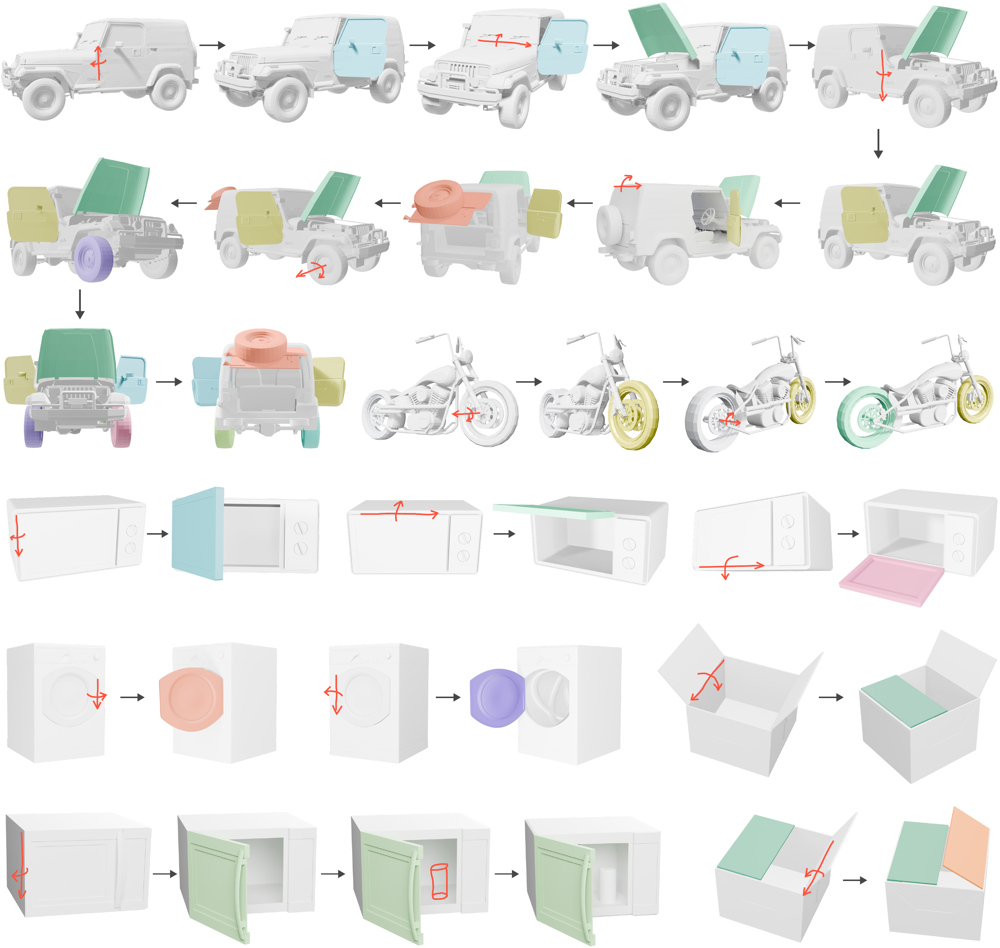
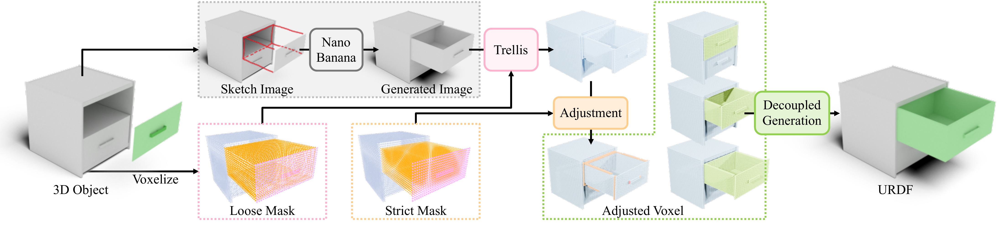

Where
Predict a movable-part mask from the sketch region and select the corresponding 3D component through hierarchical segmentation.
ACM Transactions on Graphics (Proc. SIGGRAPH 2026)
To-do
Articulation modeling aims to infer movable parts and their motion parameters for a 3D object, enabling interactive animation, simulation, and shape editing. In this paper, we present Sketch2Arti, the first sketch-based articulation modeling system for CAD objects. Our key observation is that designers naturally communicate articulation intent through lightweight sketches (e.g., arrows and strokes) that indicate how parts should move, yet translating such sketches into articulated 3D models remains largely manual.
Sketch2Arti bridges this gap by enabling users to specify articulation through simple 2D sketches drawn from a chosen viewpoint. Given a CAD model and user sketches, our approach automatically discovers the corresponding movable parts and predicts their motion parameters, allowing iterative modeling of multiple articulations on complex objects with fine-grained control. Importantly, Sketch2Arti is trained in a category-agnostic manner without requiring object category information, leading to strong generalization to diverse objects beyond existing articulation datasets.
Moreover, for shell models lacking interior structures, Sketch2Arti supports controllable internal completion guided by user sketches, generating plausible internal components consistent with the existing geometry and predicted motion constraints. Comprehensive experiments and user evaluations demonstrate the effectiveness, controllability, and generalization of Sketch2Arti.

Overview
Sketch2Arti addresses three coupled challenges in sketch-based articulation modeling: 1) locating the movable part, 2) estimating its motion, and 3) completing hidden geometry exposed by articulation.
Where
Predict a movable-part mask from the sketch region and select the corresponding 3D component through hierarchical segmentation.
How
Estimate joint type and motion parameters from local sketch, depth, and normal cues, then refine them geometrically.
What
Generate missing internal structure when articulation reveals an empty shell, while preserving existing geometry and motion constraints.

Pipeline 1
Pipeline 1 reconstructs the intended movable part and its articulation parameters from rough motion sketches. The input is a localized crop around the sketch, represented by sketch, depth, and surface-normal maps.
A UNet-based recognizer predicts image-space part evidence, joint type, pivot cues, and 3D motion direction. The part mask is matched to a 3D component with Partfield features, and the recovered motion is snapped to meaningful geometric anchors for physical plausibility.

Interactive URDF Demo
Demo Video
Results Gallery

Result Demo Gallery
Interior Completion
Most existing assets within datasets or synthesized by generative models represent objects as surface-only models, containing only the geometry visible in a canonical static pose. Kinematic articulation exposes physical voids in regions that were previously occluded, rendering the object unsuitable for realistic physical interaction.
To resolve this incompleteness, we articulate the object to its open state, generate a completed 2D reference image for the exposed interior, and then lift that reference into 3D while preserving the existing shell and respecting the predicted articulation.

Citation
If you find our work useful for your research, please consider citing our paper.
@article{yang2026sketch2arti,
title = {Sketch2Arti: Sketch-based Articulation Modeling of CAD Objects},
author = {Yang, Yi and Pan, Hao and Cui, Yijing and Sheffer, Alla and Li, Changjian},
journal = {ACM Transactions on Graphics},
volume = {45},
number = {4},
year = {2026},
doi = {10.1145/3811375}
}